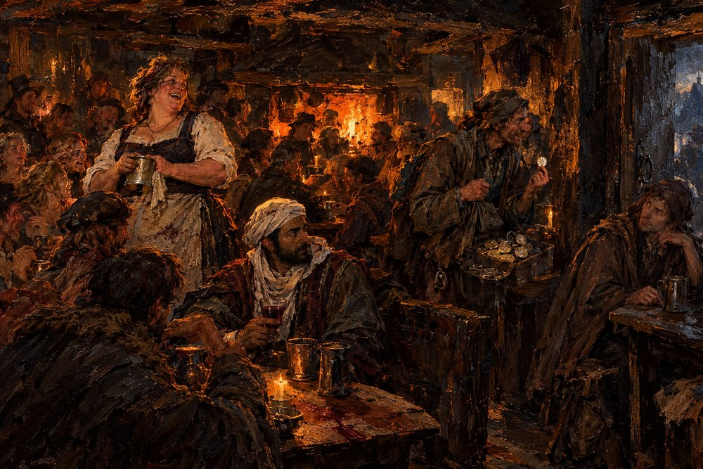

Record 5 of 10
What the tavern knew
On the first of Havren the tavern at Vilarnau holds forty on benches and barrels: Brunissen says somebody has to dig a hole, Ibrahim ibn Nasr has just told the room that in the south they eat the Weather, Gaucelm sells tin wards, and Observer 551, as a rat-catcher, listens by the door.
A packed low-ceilinged tavern lit orange by a hearth and candles, a broad laughing woman in a dark bodice and white sleeves at the upper left holding up a mug, a lean bearded man in a white head-cloth and striped cloak at the centre with a cup of red wine glancing aside, a leathery man in a brown cloak holding a small tin disk up between finger and thumb, other drinkers leaning on elbows on benches and barrels, coins and tin cups on the stained table in the foreground and a window of dark blue night at the upper right.